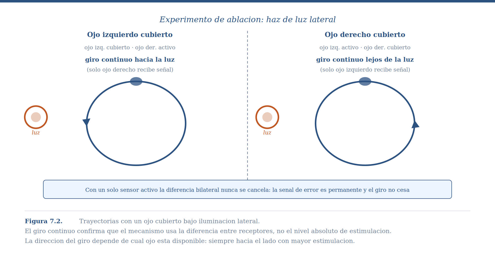
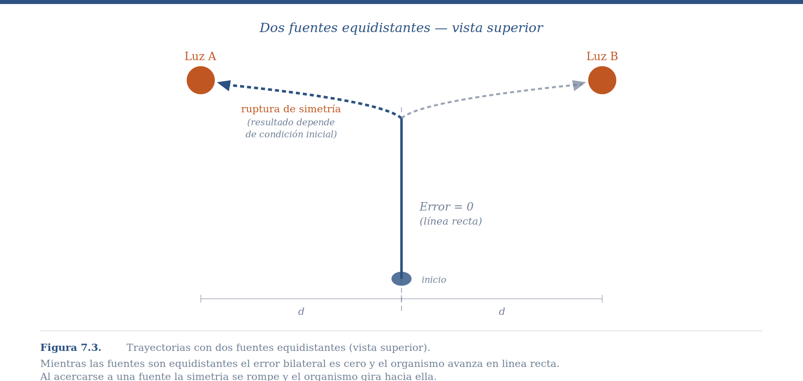
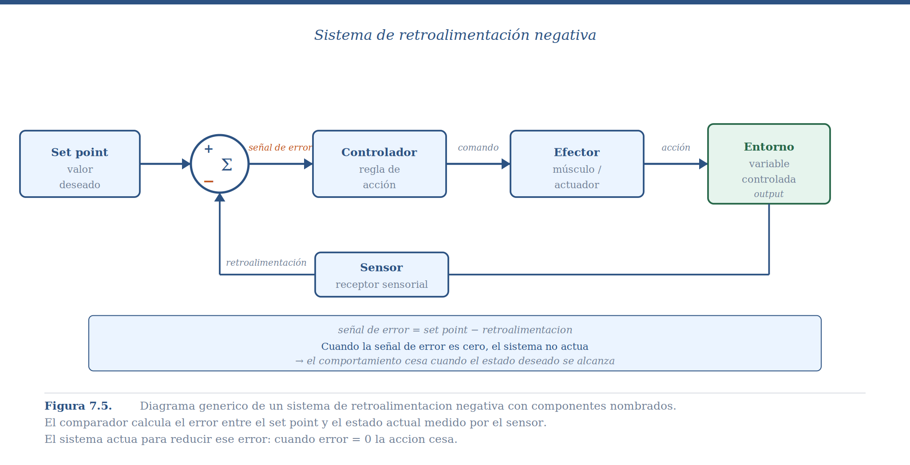
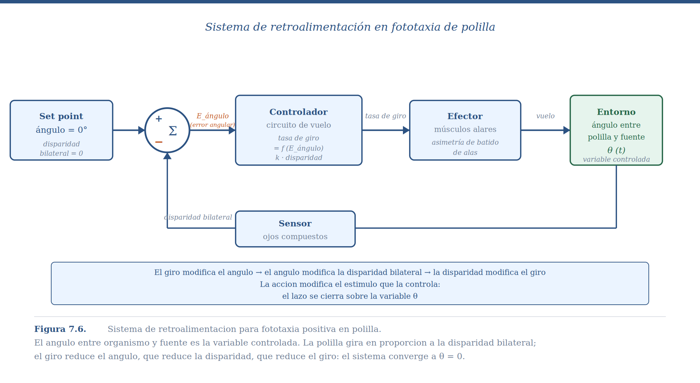

7 Sistemas de Retroalimentación
7.1 Comparación Simultánea y el Límite de la Reactividad
En el capítulo anterior dejamos a la bacteria navegando con un solo sensor. Su estrategia era comparar ahora con hace un momento en el mismo lugar: si la concentración mejora, sigue; si empeora, busca otra dirección. Eso funciona, pero es lento y sinuoso. La bacteria no sabe hacia dónde está el nutriente —solo sabe si está mejorando o no.
La aparición de la simetría bilateral en los animales resolvió esa limitación de una forma elegante: en lugar de un sensor que se mueve para comparar el mundo en distintos tiempos, el organismo dispone de dos sensores separados que comparan el mundo en distintos lugares al mismo tiempo. Con este arreglo, la dirección de la fuente queda codificada directamente en la diferencia entre lo que detecta el lado izquierdo y lo que detecta el lado derecho, sin necesidad de moverse primero para saberlo.
Este capítulo introduce el mecanismo que hace posible esa comparación simultánea y lo generaliza: el sistema de retroalimentación. Veremos cómo está organizado, qué preguntas conviene hacerle, y —lo más importante— cuál es la limitación fundamental que comparte con el ascenso de colina y que abre la puerta al aprendizaje.
7.2 El Problema: Orientarse en el Espacio
Imagina a una polilla nocturna. Hay una fuente de luz a una distancia desconocida. No tiene mapa, no tiene brújula. Solo tiene lo que sus dos ojos detectan en este momento: dos intensidades luminosas, una para cada lado de su cuerpo. ¿Cómo usa esa información mínima para orientar su cuerpo hacia la fuente?
Este problema —orientarse hacia o alejarse de una fuente puntual de estimulación— aparece en múltiples modalidades a lo largo del reino animal. La fototaxia de polillas y cucarachas, la quimiotaxia de insectos siguiendo plumas de feromonas, la fonotaxia de grillos hembra localizando machos que cantan, la termotaxia de serpientes detectando presas de sangre caliente: todos son el mismo problema computacional resuelto con el mismo principio básico. La diversidad está en el tipo de estímulo; el mecanismo subyacente es el mismo.
7.3 El Mecanismo: Comparación Simultánea
La solución más simple posible al problema de orientación tiene dos componentes. Primero, comparar simultáneamente la estimulación que llega al receptor izquierdo con la que llega al derecho. Segundo, girar en la dirección del receptor que recibe más estimulación —en el caso de fototaxia positiva, hacia la luz; en el caso de fototaxia negativa, como la cucaracha, en dirección contraria.
Este mecanismo —conocido en biología como tropotaxia— es una instancia del principio más general que introduce este capítulo: el sistema de retroalimentación. La información direccional está disponible instantáneamente, sin costo de movimiento. No hay que explorar para saber hacia dónde girar.
Dos experimentos clásicos establecen que lo que controla el comportamiento es la diferencia entre sensores, no el nivel absoluto de estimulación en ninguno de ellos.
El primero cubre uno de los ojos compuestos de una polilla con pintura opaca. La predicción es directa: con solo un sensor funcional, la diferencia bilateral siempre favorece ese lado; la señal de corrección nunca se cancela porque no hay información desde el lado opuesto. El resultado es un giro continuo, sin orientación hacia ningún punto. Cuando se cubre el ojo izquierdo, la polilla gira continuamente a la izquierda; cuando se cubre el derecho, gira a la derecha. La cucaracha hace exactamente lo opuesto —porque huye de la luz— lo que confirma que el signo del giro depende del tipo de fototaxia, no de cuál ojo está disponible.

El segundo experimento coloca dos fuentes de luz de igual intensidad a igual distancia del organismo. Si la conducta está controlada por la diferencia bilateral, la predicción es que el animal debería moverse en línea recta entre ambas fuentes —porque mientras estén equidistantes, los dos ojos reciben la misma estimulación, la diferencia es cero, y no hay señal de giro. Eso es exactamente lo que ocurre: el organismo avanza en línea recta hasta que la proximidad a una de las fuentes rompe la simetría, momento en que gira bruscamente. Pocas veces un experimento confirma tan limpiamente una predicción.

Vale la pena subrayar el contraste con la bacteria del capítulo anterior: descartamos la comparación simultánea en la Salmonela porque el organismo es demasiado pequeño para detectar diferencias de concentración entre sus dos extremos. En la polilla, el tamaño sí permite esa comparación —y la evidencia experimental muestra que exactamente eso es lo que ocurre.
7.4 El Sistema de Retroalimentación
La fototaxia es un caso particular de un mecanismo general que aparece a lo largo de la biología y la ingeniería: el sistema de retroalimentación. Estamos acostumbrados a pensar en la relación organismo-entorno como unidireccional —el entorno produce un estímulo, el organismo produce una respuesta. Pero esa imagen es incompleta: la respuesta del organismo modifica el entorno, lo que modifica el estímulo que controla la respuesta.
La temperatura alta produce sudoración; la sudoración reduce la temperatura; la temperatura reducida disminuye la sudoración. El bebé recién nacido succiona; la succión extrae leche; la tasa de succión estimula la producción de leche de la madre. En todos estos casos la causalidad no va de A a B sino que forma un lazo cerrado donde A y B se codeterminan mutuamente.
Formalmente, el sistema está definido por dos ecuaciones simultáneas acopladas. La función de control (del organismo) describe cómo se transforma el estímulo en comportamiento:
\[C = G(X)\]
La función de retroalimentación (del entorno) describe cómo el comportamiento modifica el estímulo:
\[X = E(C)\]
En fototaxia: C es la tasa de giro, X es la disparidad bilateral entre los dos ojos. El giro cambia el ángulo entre el organismo y la fuente, lo que cambia la disparidad, lo que cambia el giro. El lazo se cierra.
En la implementación biológica concreta hay cuatro componentes reconocibles. El sensor mide el estado actual —los ojos compuestos que detectan intensidad luminosa en cada lado. El comparador calcula la discrepancia entre el estado actual y el estado deseado —el circuito neural que resta la activación de un ojo de la del otro, produciendo la señal de error. El controlador transforma esa señal de error en una acción —la regla que convierte la disparidad en una tasa de giro. El efector ejecuta la acción —los músculos de las alas que producen el giro— y al hacerlo modifica el ángulo, cerrando el lazo.

Esto contrasta con los sistemas abiertos, donde el comportamiento responde al entorno pero no modifica la variable que lo controla. Un calefactor encendido permanentemente sin importar la temperatura es un sistema abierto. El golpe de lengua de una rana capturando una mosca también: una vez iniciado, el movimiento se ejecuta hasta completarse sin corrección durante su trayectoria. Y cubrir un ojo en el experimento de tropotaxia transforma al organismo en un sistema abierto: el giro nunca recibe señal de corrección, y el resultado es rotación indefinida.
Vale la pena detenerse un momento para notar que, en este capítulo igual que en el anterior, hemos aplicado sin nombrarlo el análisis de tres niveles del Capítulo 1. El nivel computacional es orientarse hacia una fuente de forma rápida y robusta. El nivel algorítmico es la comparación simultánea bilateral, el cálculo de una señal de error, y la función de control que transforma ese error en tasa de giro. El nivel de implementación —los circuitos neurales específicos, los fotorreceptores, los músculos— varía entre especies y no necesitamos especificarlo para entender cómo funciona el sistema. Una polilla, un robot de dos ruedas y un sistema de climatización doméstico comparten la misma arquitectura algorítmica aunque sus implementaciones físicas no tengan nada en común.
La retroalimentación negativa ocurre cuando el comportamiento tiende a reducir la señal de error —la acción contrarresta la desviación que la provocó. El nombre puede sonar paradójico, pero refleja que la acción tiene signo opuesto al error. Es el caso de la fototaxia y de toda regulación homeostática.
La retroalimentación positiva ocurre cuando el comportamiento amplifica la señal de error. La apertura de canales de sodio durante un potencial de acción es el ejemplo canónico: la entrada de iones positivos despolariza la membrana, lo que abre más canales, en una cascada que solo se detiene cuando todos los canales están abiertos. Es útil para producir transiciones rápidas y decisivas entre estados, pero no puede servir como mecanismo de orientación.
7.5 Las Cuatro Preguntas
Ante cualquier sistema de retroalimentación, conviene hacerse las mismas cuatro preguntas en orden: ¿tiene el sistema un equilibrio? ¿Cuál es ese equilibrio? ¿Cómo llega el sistema al equilibrio —cuál es su dinámica? ¿Cómo responde ante una perturbación abrupta? Apliquémoslas al sistema de fototaxia.
Para hacerlo concreto, necesitamos la función de control. Sea ω la tasa de giro, S_izq la estimulación del sensor izquierdo, y S_der la del derecho:
\[\omega = k \cdot (S_{der} - S_{izq})\]
La diferencia entre paréntesis es la señal de error: codifica tanto la magnitud de la desviación como su dirección. Si S_der > S_izq, la fuente está a la derecha, el error es positivo, y ω es positivo (giro a la derecha). Si ambas son iguales, el error es cero y el organismo sigue recto.
El parámetro k es la ganancia del sistema: qué tan importante es para el organismo una diferencia dada entre sus sensores. Un k alto significa que diferencias pequeñas producen giros grandes; un k bajo requiere diferencias grandes para producir giros apreciables. Esta interpretación —la ganancia como peso de una señal de discrepancia— reaparecerá en capítulos posteriores cuando veamos cómo el aprendizaje modifica qué tanto le importa a un organismo la diferencia entre lo que predijo y lo que ocurrió. En fototaxia negativa, k < 0: ante más luz en el lado derecho, el organismo gira hacia la izquierda, alejándose. El signo de k define si el sistema busca o evita la fuente.
¿Tiene equilibrio? Sí. El equilibrio ocurre cuando ω = 0, es decir, cuando la señal de error es cero.
¿Cuál es el equilibrio? La señal de error es cero cuando S_der = S_izq, lo que ocurre cuando el organismo apunta directamente hacia la fuente (ángulo θ = 0°). Hay un segundo equilibrio matemático en θ = 180°, pero es inestable: cualquier perturbación mínima empuja al sistema lejos de ese punto. El equilibrio adaptativo es el único estable.
¿Cuál es la dinámica? La señal de error es mayor cuando el ángulo θ es grande y más pequeña cuando θ es pequeño. Esto significa que el giro correctivo es grande cuando más lo necesitas y se va volviendo cada vez más sutil conforme te acercas al equilibrio. La convergencia que se desacelera al acercarse al equilibrio produce el patrón de trayectoria observado en los experimentos: no una línea recta, sino una espiral que se cierra progresivamente hacia la fuente. Cuanto mayor el ángulo inicial, mayor la curvatura; cuanto más cercano al equilibrio, más recta la trayectoria.
